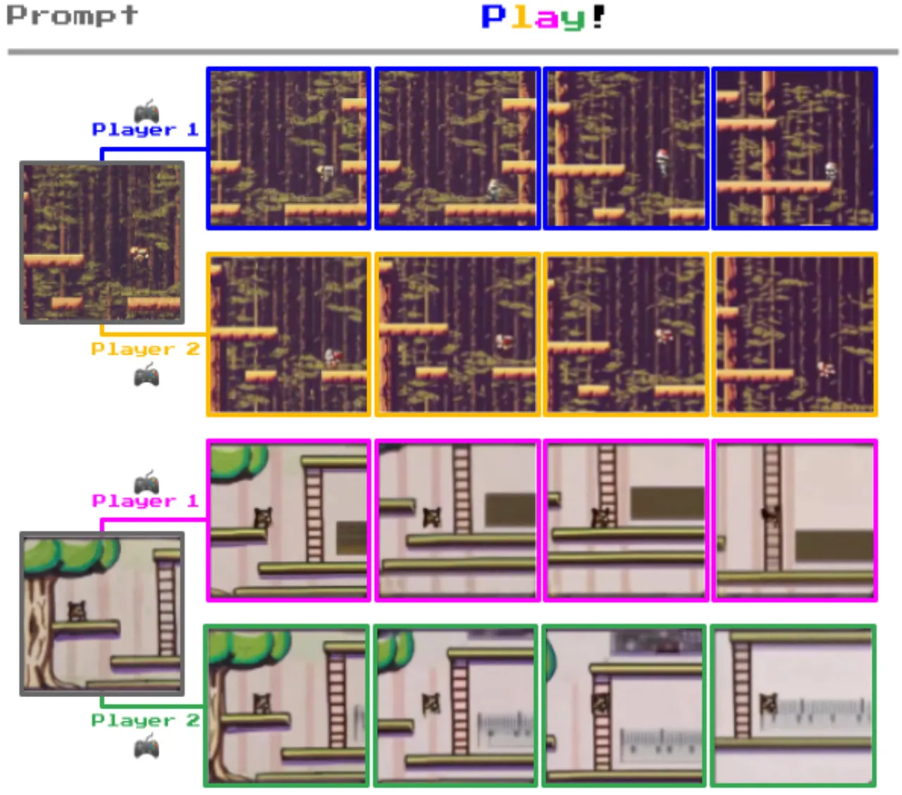
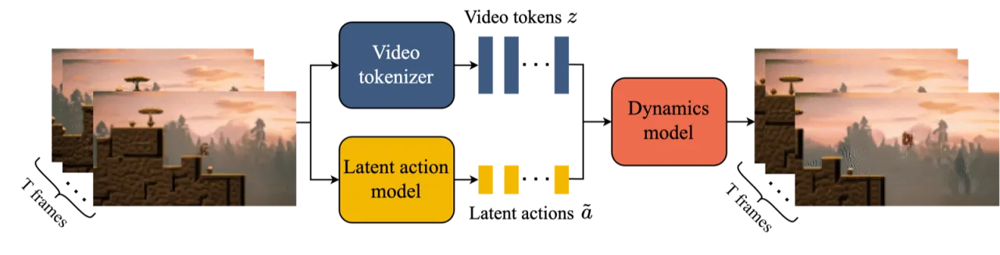
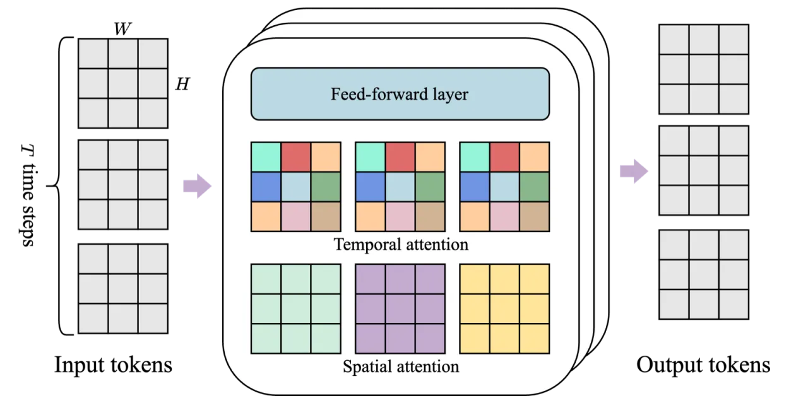
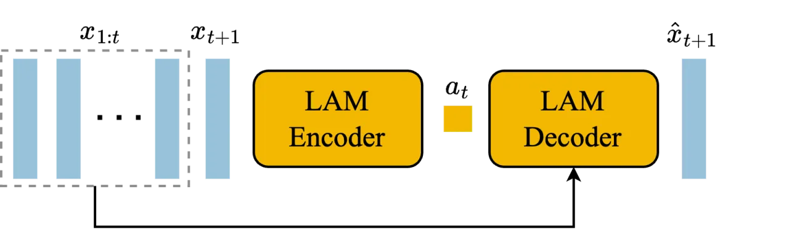
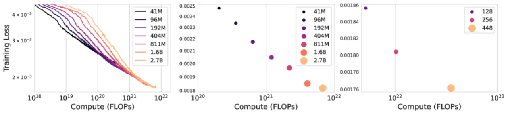
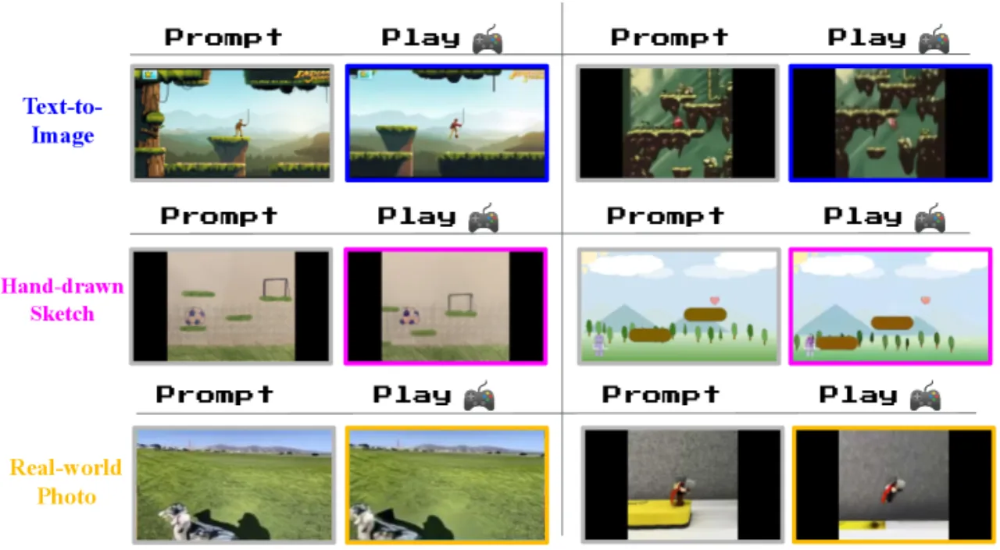
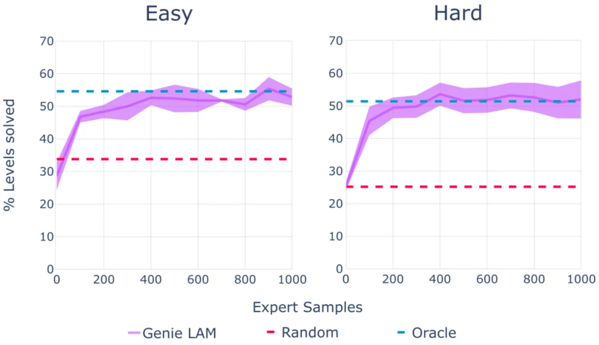

Genie 是一个 110 亿参数的基础世界模型（foundation world model），仅凭未标注的互联网视频训练，即可从单张图片、文字描述或手绘草图生成可逐帧交互的虚拟环境。模型无需任何动作标注，自行学习离散的潜在动作空间（latent action space），使智能体能够在生成的环境中通过模仿学习来训练。
生成式 AI 已能生成高质量的文本、图像和视频，但真正可交互的虚拟环境仍高度依赖人工设计或带标注的数据。能否从海量无标注的网络视频中，自动学习出一个可供智能体"玩耍"的交互世界？
"We introduce Genie, the first generative interactive environment trained in an unsupervised manner from unlabelled Internet videos."

现有方法要么依赖真实动作标注（如环境模拟器日志），要么只能生成被动视频，无法响应用户交互。Genie 的核心洞见在于：动作信息隐含在视频帧的时序变化之中——只要能从相邻帧中推断出潜在动作，便可在完全无标注的条件下学习一个可控的动态模型。
Genie 由三个协同训练的模块构成：时空视频 tokenizer（将视频帧压缩为离散 token）、潜在动作模型（LAM）（无监督推断帧间动作）、以及自回归动态模型（依据动作预测下一帧）。推理时，LAM 被丢弃，用户直接输入 codebook 索引来控制生成。

tokenizer 采用改进的 VQ-VAE 架构，将视频建模为二维 token 网格（空间 × 时间）。空间 attention 在每一帧内处理 O(H×W) 个 token，时间 attention 则跨帧处理 O(T) 个 token，相比 C-ViViT 的全时空 attention 大幅降低显存。因果遮罩（causal masking）保证编码时不泄露未来信息，使 tokenizer 可在流式场景中使用。

LAM 以像素级别的前若干帧和当前帧为输入，通过 VQ-VAE 编码器推断出离散潜在动作（codebook 大小为 8），再由解码器以前几帧 + 潜在动作重建当前帧。VQ-VAE 的信息瓶颈迫使 codebook 只保留决定帧间差异的最关键信号——即动作。论文特别指出，像素输入比 token 输入更好地保留了运动信息，在可控性指标 ΔtPSNR 上提升明显（1.91 vs 1.33）。

动态模型基于 MaskGIT 架构，输入为历史帧的视频 token 序列加上对应的潜在动作 embedding（加性注入，效果优于拼接），预测下一帧的 token 分布。训练时随机遮罩 50%–100% 的目标 token 并用交叉熵损失优化；推理时经 25 步迭代采样还原完整帧。动态模型占整体参数量的 10.1B（LAM 300M + tokenizer 200M）。
主要实验在两个域进行：Platformers（6.8M 视频，约 30k 小时，2D 平台游戏）和Robotics（~130k 机器人演示 + 209k 真实场景片段）。评估指标包括视频质量 FVD（Fréchet Video Distance，越低越好）和可控性 ΔtPSNR（越高越好）。
| 架构 | 显存 | FVD ↓ | ΔtPSNR ↑ |
|---|---|---|---|
| ViT（仅空间 attention） | 0.3 GB | 114.5 | 1.39 |
| C-ViViT | 1.6 GB | 272.7 | 1.37 |
| ST-ViViT（本文） | 0.9 GB | 81.4 | 1.66 |
| LAM 输入 | FVD ↓ | ΔtPSNR ↑ |
|---|---|---|
| Token 输入 | 38.8 | 1.33 |
| 像素输入（本文） | 40.1 | 1.91 |
像素输入在 FVD 上略差，但显著提升了可控性（ΔtPSNR +0.58），实验选择像素输入以优先保证可交互性。



在机器人演示数据上（Robotics 域），2.5B 参数版本 FVD 达到 82.7。模型在无任何物理先验的情况下自发学会了可形变物体的物理规律（如布料折叠、软体运动）以及平台游戏中的视差效果（parallax）——前景运动快于背景，体现出对 3D 深度的隐式理解。
自回归生成存在误差累积问题：模型记忆窗口仅为 16 帧，超出此范围后场景一致性明显下降，出现物体消失、背景突变等幻觉现象。
当前推理速度约 1 FPS，远低于真实游戏交互所需的帧率（30+ FPS）。每帧需执行 25 步 MaskGIT 采样，计算代价高昂，实时交互尚不可行，论文将提速列为未来工作。
受多种因素限制，完整模型权重未对外发布。作者提供了可复现的 CoinRun 案例研究（case study）作为替代，但社区无法直接在此基础上进行下游研究或微调。
当前模型主要在 2D 游戏和机器人演示上验证，尚未扩展至 3D 场景、第一人称视角或真实世界复杂环境。潜在动作空间的语义是否能迁移到更复杂的动作空间（如连续动作）仍有待探索。